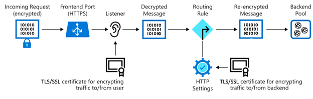

Azure Application Gateway has a series of components that combine to securely route and load balance requests across a pool of web servers. Application Gateway includes the following components:
- Front-end IP address : Client requests are received through a front-end IP address. You can configure Application Gateway to have a public IP address, a private IP address, or both. Application Gateway can't have more than one public IP address and one private IP address.
- Listeners : Application Gateway uses one or more listeners to receive incoming requests. A listener accepts traffic arriving on a specified combination of protocol, port, host, and IP address. Each listener routes requests to a back-end pool of servers following routing rules that you specify. A listener can be Basic or Multi-site. A Basic listener only routes a request based on the path in the URL. A Multi-site listener can also route requests using the hostname element of the URL. Listeners also handle TLS/SSL certificates for securing your application between the user and Application Gateway.
- Routing rules : A routing rule binds a listener to the back-end pools. A rule specifies how to interpret the hostname and path elements in the URL of a request and direct the request to the appropriate back-end pool. A routing rule also has an associated set of HTTP settings. These HTTP settings indicate whether (and how) traffic is encrypted between Application Gateway and the back-end servers. Other configuration information includes Protocol, Session stickiness, Connection draining, Request timeout period, and Health probes.
Load balancing in Application Gateway
Application Gateway uses a round-robin mechanism to automatically load balance the requests sent to the servers in each back-end pool. Load-balancing works with the Open Systems Interconnection (OSI) Layer 7 routing implemented by Application Gateway routing, which means that it load balances requests based on the routing parameters (host names and paths) used by the Application Gateway rules. In comparison, other load balancers, such as Azure Load Balancer, function at the OSI Layer 4 level and distribute traffic based on the IP address of the target of a request.
You can configure session stickiness if you need to ensure that all requests for a client in the same session are routed to the same server in a back-end pool.
Web application firewall
The web application firewall (WAF) is an optional component that handles incoming requests before they reach a listener. The web application firewall checks each request for many common threats based on the Open Web Application Security Project (OWASP). Common threats include: SQL-injection, Cross-site scripting, Command injection, HTTP request smuggling, HTTP response splitting, Remote file inclusion, Bots, crawlers, and scanners, and HTTP protocol violations and anomalies.
OWASP defines a set of generic rules for detecting attacks. These rules are referred to as the Core Rule Set (CRS). The rule sets are under continuous review as attacks evolve in sophistication. WAF supports four rule sets: CRS 3.2, 3.1, 3.0 and 2.2.9. CRS 3.1 is the default. If necessary, you can opt to select only specific rules in a rule set, targeting certain threats. Additionally, you can customize the firewall to specify which elements in a request to examine, and limit the size of messages to prevent massive uploads from overwhelming your servers.
Back-end pools
A back-end pool is a collection of web servers that can be made up of: a fixed set of virtual machines, a virtual machine scale-set, an app hosted by Azure App Services, or a collection of on-premises servers.
Each back-end pool has an associated load balancer that distributes work across the pool. When configuring the pool, you provide the IP address or name of each web server. All the servers in the back-end pool should be configured in the same way, including their security settings.
If you're using TLS/SSL, the back-end pool has an HTTP setting that references a certificate used to authenticate the back-end servers. The gateway re-encrypts the traffic by using this certificate before sending it to one of your servers in the back-end pool.
If you're using Azure App Service to host the back-end application, you don't need to install any certificates in Application Gateway to connect to the back-end pool. All communications are automatically encrypted. Application Gateway trusts the servers because Azure manages them.
Application Gateway uses a rule to specify how to direct the messages that it receives on its incoming port to the servers in the back-end pool. If the servers are using TLS/SSL, you must configure the rule to indicate:
- That your servers expect traffic through the HTTPS protocol.
- Which certificate to use to encrypt traffic and authenticate the connection to a server.
Application Gateway routing
When the gateway routes a client request to a web server in the back-end pool, it uses a set of rules configured for the gateway to determine where the request should go. There are two primary methods of routing this client request traffic: path-based routing and multiple-site routing.
Path-based routing
Path-based routing sends requests with different URL paths to different pools of back-end servers. For example, you could direct requests with the path /video/* to a back-end pool containing servers that are optimized to handle video streaming, and direct /images/* requests to a pool of servers that handle image retrieval.
Multiple-site routing
Multiple-site routing configures more than one web application on the same Application Gateway instance. In a multi-site configuration, you register multiple domain name system names (CNAMEs) for the IP address of the application gateway, specifying the name of each site. Application Gateway uses separate listeners to wait for requests for each site. Each listener passes the request to a different rule, which can route the requests to servers in a different back-end pool. For example, you could direct all requests for
http://contoso.com
to servers in one back-end pool, and requests for
http://fabrikam.com
to another back-end pool. The following diagram shows this configuration:
Multi-site configurations are useful for supporting multitenant applications, where each tenant has its own set of virtual machines or other resources hosting a web application.
Application Gateway routing also includes these features:
- Redirection . Redirection can be used to another site, or from HTTP to HTTPS.
- Rewrite HTTP headers . HTTP headers allow the client and server to pass parameter information with the request or the response.
- Custom error pages . Application Gateway allows you to create custom error pages instead of displaying default error pages. You can use your own branding and layout using a custom error page.
TLS/SSL termination
When you terminate the TLS/SSL connection at the application gateway, it offloads the CPU-intensive TLS/SSL termination workload from your servers. Also, you don’t need to install certificates and configure TLS/SSL on your servers.
If you need end-to-end encryption, Application Gateway can decrypt the traffic on the gateway by using your private key, then re-encrypt again with the public key of the service running in the back-end pool.
Traffic enters the gateway through a front-end port. You can open many ports, and Application Gateway can receive messages on any of these ports. A listener is the first thing that your traffic meets when entering the gateway through a port. The listener is set up to listen for a specific host name, and a specific port on a specific IP address. The listener can use an TLS/SSL certificate to decrypt the traffic that enters the gateway. The listener then uses a rule that you define to direct the incoming requests to a back-end pool.

Exposing your website or web application through the application gateway also means that you don't directly connect your servers to the web. You're exposing only port 80 or port 443 on the application gateway, which is then forwarded to the back-end pool server. In this configuration, your web servers aren't directly accessible from the internet, which reduces the attack surface of your infrastructure.
Health probes
Health probes determine which servers are available for load-balancing in a back-end pool. The Application Gateway uses a health probe to send a request to a server. When the server returns an HTTP response with a status code between 200 and 399, the server is considered healthy. If you don't configure a health probe, Application Gateway creates a default probe that waits for 30 seconds before deciding that a server is unavailable. Health probes ensure that traffic isn't directed to a nonresponsive or failed web endpoint in the back-end pool.
Autoscaling
Application Gateway supports autoscaling, and can scale up or down based on changing traffic load patterns. Autoscaling also removes the requirement to choose a deployment size or instance count during provisioning.
WebSocket and HTTP/2 traffic
Application Gateway provides native support for the WebSocket and HTTP/2 protocols. The WebSocket and HTTP/2 protocols enable full duplex communication between a server and a client over a long-running Transmission Control Protocol (TCP) connection. This type of communication is more interactive between the web server and the client, and can be bidirectional without the need for polling as required in HTTP-based implementations. These protocols have low overhead (unlike HTTP) and can reuse the same TCP connection for multiple request/responses resulting in a more efficient resource utilization. These protocols are designed to work over traditional HTTP ports of 80 and 443.